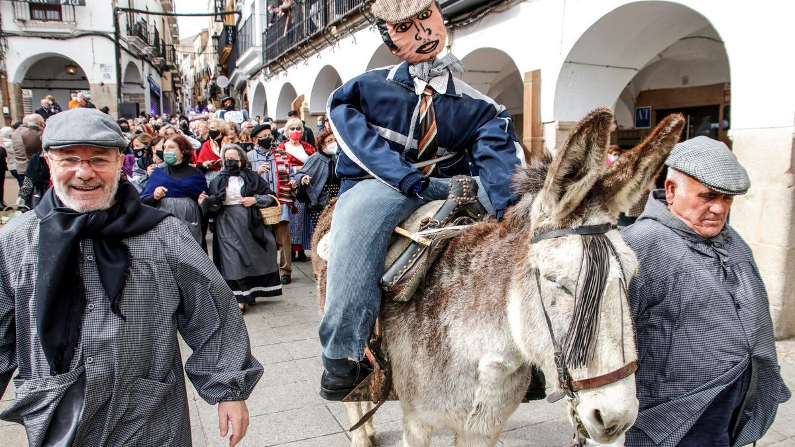
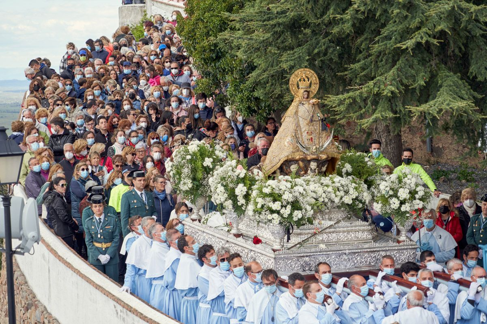

Cáceres, mi ciudad natal
En Cáceres tenemos algunas tradiciones importantes como la quema del dragón la noche de San Jorge , la fiesta
de las lavanderas o la bajada de la Virgen de la Montaña.
Esta fiesta local se realiza la noche del día 22 de abril. Hay un desfile por las calles de Cáceres en el que participan gente
disfrazada de moros y cristianos, y que a la cola del desfile tiene a San Jorge en su caballo blanco. El pasacalles desemboca en la
plaza mayor, donde se cuenta el cuento del rey moro que convirtió a su hija en una gallina de oro por enamorarse de un caballero cristiano.
Al final del cuento, se quema un dragón de cartón, haciendo referencia a la leyenda de San Jorge, donde se enfrenta a un dragón y finalmente lo mata
quemándolo. Esto tiene lugar a las 00.00, y a partir de ese momento se "abren" las puertas de la parte antigua para buscar a la gallina de oro,
ya que quien la encuentre recibe un premio en metálico por parte del ayuntamiento. Es una tradición muy chula y sin duda mi favorita,
pero por desgracia nunca he encontrado a la gallina de oro. Esta fiesta representa la reconquista cristiana de la ciudad, y por supuesto el
23 de abril es festivo en todo el municipio.
Quema del dragón, 2024.
Esta tradición se remonta a cuando las mujeres se juntaban en el lavadero de la Ribera del Marco, a lavar sus ropas. Se lleva a cabo
a principio de febrero, y para ella se contruye un "pelele" con ropajes viejos y reciclados, y se lleva encima de un burro en el desfile.
Este pelele será quemado, ya que simbolizaba lo peor de esa época del año, el invierno, en el que la comida escaseaba, y se deseaba una
primavera próspera.
Toda la gente que desfila lleva ropajes de la época como pañuelos en la cabeza, boinas, faldas de cuadros, etc.

Desfile de Febrero, 2022.
La ciudad de Cáceres celebra a finales de abril, es decir, justo después de San Jorde, la Bajada de la Virgen de la Montaña, su patrona. Esta Virgen
se encuentra normalmente en el santuario de la montaña, muy cerquita de la ciudad, pero con una gran subida.
Durante diez días antes del primer domingo de mayo, se realiza un novenario dedicado a la Virgen, para lo cual es trasladada desde su Santuario
hasta la Concatedral de Santa María.

Bajada de la Virgen de la Montaña, 2022.